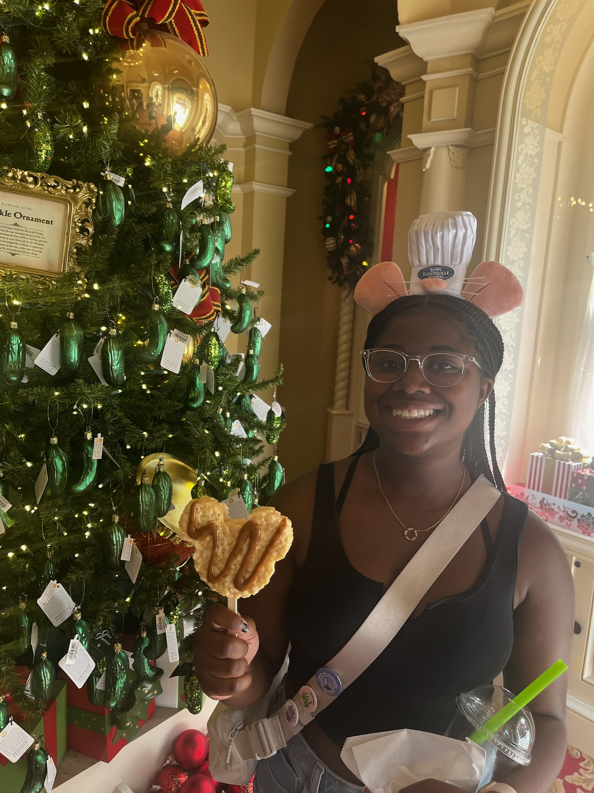
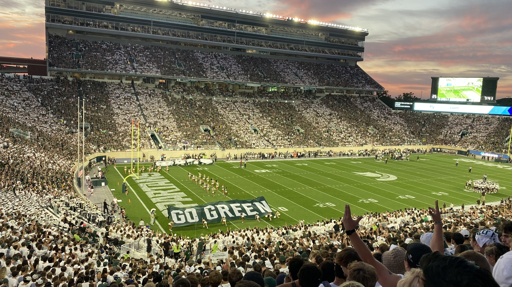
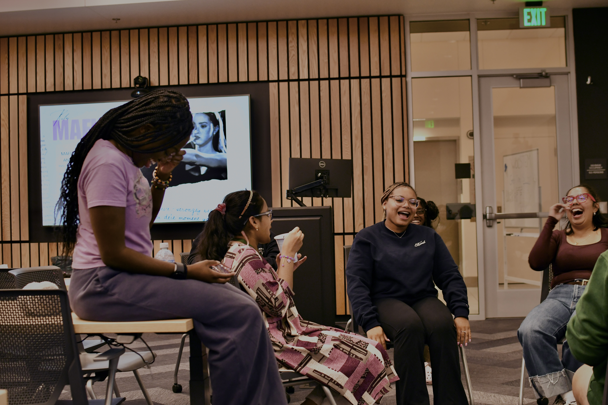
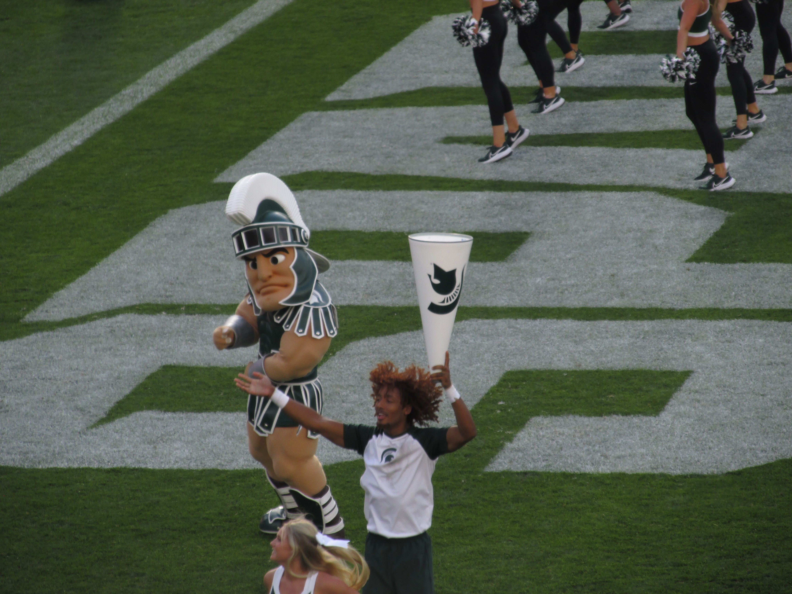

My journey into design began with a simple question: How can I make bad designs better?As a freshman computer science major, I found myself one credit shy of being a full-time student. On a whim, I enrolled in Introduction to Accessibility, a one-credit class that opened my eyes to the transformative power of accessible design. That experience sparked a passion I haven’t stopped exploring.
Now, two years later, I’m a junior majoring in Experience Architecture, committed to deepening my expertise in accessibility, design, and research to create meaningful experiences for users.
I am deeply committed to community and advocacy work. I co-founded Women of Color in STEM at MSU, an organization that uplifts and empowers women of color in STEM, on Michigan States campus, through mentorship and professional development opportunities. I also serve as an executive board member for Pad the Mitten, an organization dedicated to combating period poverty across Michigan. Both of these roles have given me the opportunity to lead, collaborate, and create spaces in communities that I'm passionate about.
When I’m not engaged in these initiatives, I enjoy exploring other passions that keep me creative and balanced. I love traveling, reading, and attending Michigan State football games. I also dabble in photography and have a growing LEGO collection that I love building and expanding. At home, you can often find me experimenting in the kitchen with new recipes or baking something sweet.



